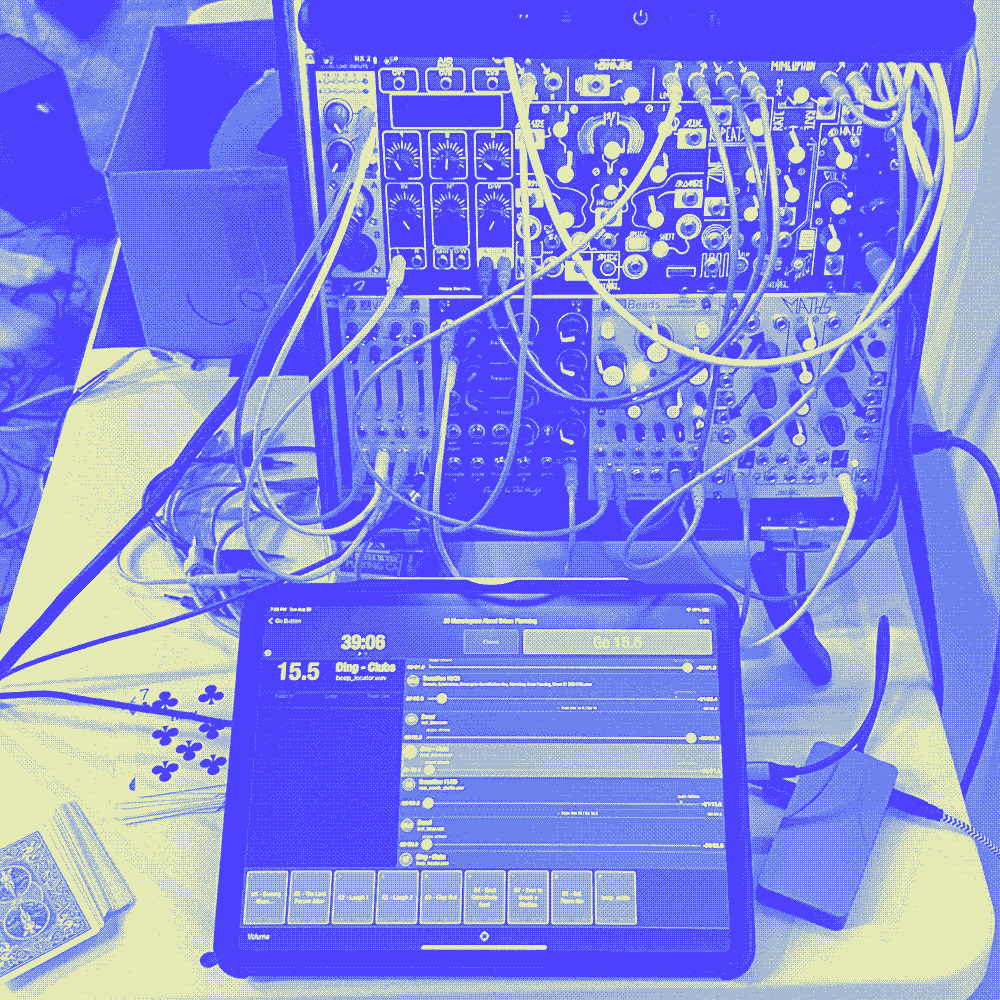

36 MONOLOGUES
ABOUT URBAN PLANNING
In late summer 2023, I was the Sound Designer for this weird and awesome theatre piece produced by the Municipal Hole Company called 36 MONOLOGUES ABOUT URBAN PLANNING (to be performed in a cul-de-sac) wherein 4 performers deliver 9 monologues each. Contrary to the title, it took place at The Neofuturist Theatre in Chicago.
At the top of the show, a deck of cards is shuffled by the audience, determining the order of the monologues. With each drawing of the cards a new title is announced, "FOUR OF CLUBS: INTERVIEW WITH THE AUDIENCE" for example, then the actors scramble into place. The monologues are funny, disturbing, apocalyptic, and downright wacky. It's wild ride. My job was to enhance the sensory experience with sound. I also got to play the announcer.
I designed two types of sounds for this production: pre-recorded cues and live sounds. Let's go over the design goals for each, and how they were met.
First, I began work on pre-recorded sounds, starting with transitionary beeps. Their job is to signal the beginning and end of each monologue and transition. This an important function for both the actors and the audience as we are taken from one world to the next. Because the tone of each monologue varied wildly, I knew the solution had to remain neutral and instead had to work as a bit of metatextual messaging. In other words, 100% theatrical and 0% dramatic. Working with the director on this problem, I identified three types of messages to be heard with each transition: END, GO, and DONE.
END is a period. It's heard shortly after the final word of every monologue and before the announcer reads the next title. Then comes GO, which signals to the actors that it's time to transition. DONE means everything is in place, and the monologue has begun. I gathered a pool of over 30 different sounds before I landed on the three that I felt most effectively communicated these messages.
- END - Airplane seatbelt sign
- GO - Electronic beep with reverb
- DONE - Mini timer bell
Another pre-recorded element of the design was something to be heard during the transitions, to act as a palette cleanser. My initial concept was to create one long gradually evolving sound and simply cut it into 36 segments. Like the beeps, I tried to keep it neutral. It wasn't until we tested this idea out in rehearsal that this concept seemed to fail as a palette cleanser and generally felt like it was less fun than the rest of the show. It sort of had a blurring effect, rather than palette cleansing.
What we needed was extreme contrast, something to embrace the disorienting nihilism of the material. I decided to switch to an "everything flavor" approach. I found 37 unique and aurally striking sounds, about a minute each in length. I had a lot of fun pulling from a broad range of contexts both recognizable and not, from a tennis match, to a forest fire, to a jacuzzi jets. Now we were in the tumbler!
One limitation of the app I used (amazing app btw) was that the cues had to be in a fixed order. This meant we had no control over which monologues would be adjacent to which transition sounds. This limitation actually worked in our favor. While the monologues were randomized, they were still grouped by suit. The playwright let me in on a little secret: the suits represented thematic pillars. Hearts was love, clubs was war, diamonds was money, and spades was work. I used that framework to loosely trace a thematic arc with the order of the transition sounds. Loose, because I wanted to avoid sounds with an obvious emotional association. I was going for gray, grays that could be colored differently with each permutation the show took. I think it worked wonderfully.
The other half of the equation was live sounds. Grey was interested in using my knowledge of modular synthesizers to rig up something that could add chaotic yet responsive accompaniment to the actors and at some points, add effects to their voices. I devised a setup with various digital audio processors and Rob Hordijk's Benjolin. Once I settled on a patch and got familiar with what it could do, I played along with the actors like a weird saxophone. Probably my favorite moment was Four of Hearts, when one of the actors patched in their phone audio and fed me Instagram reels which I unleashed granular mayhem on.
That's about it! Thanks for reading.